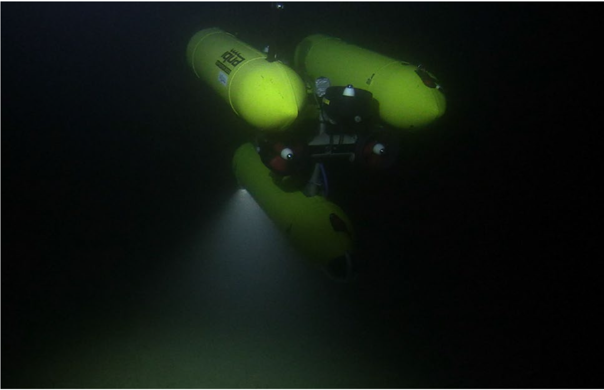

|
Mengkun She | 佘梦坤 Hi! I'm a Ph.D. student at the Institute of Computer Science, Christian-Albrechts-Universität zu Kiel in Germany. Here, I'm working in the Marine Data Science group advised by Prof. Dr. Kevin Köser. Before moving to Kiel University, I was a research scientist in the Oceanic Machine Vision group at GEOMAR Helmholtz-Zentrum für Ozeanforschung Kiel |

|
|
|
|
ResearchAt MDS group, we focus on Artificial Intelligence and Perception for the Marine Sciences and Environments, in particular at the interface of Computer Vision, Computer Graphics, Robotics and Machine Learning. We therefore need to deal with challenging but very interesting real-world images acquired by deep-sea robots. Highlights are the major works. |
|
Autonomous Visual 3D Mapping of the Ocean Floor by Underwater Robots Equipped with a Single Photo Camera
Kevin Köser, Mengkun She, Nikolaj Diller, Sylvia Reissmann, Tim Weiß, etc ... [Springer Book Chapter] Scanning Technologies for Autonomous Systems |
|


|
Refractive COLMAP: Refractive Structure-from-Motion Revisited
Mengkun She, Felix Seegräber, David Nakath, Kevin Köser IEEE/RSJ International Conference on Intelligent Robots and Systems (IROS), 2024 (Oral Presentation) Preprint / Code Underwater cameras suffer from geometric distortion induced by refraction of light rays at the water-glass-air interfaces. There has been works going on to analyze and calibrate such systems. However, we ask the question: what are you going to do with the calibrated refractive cameras? Can you use it in structure-from-motion? We therefore integrate the refractive geomtry within the COLMAP framework and release it as open-source. |
|
Semihierarchical Reconstruction and Weak-area Revisiting for Robotic Visual
Seafloor Mapping
Mengkun She, Yifan Song, David Nakath, Kevin Köser Journal of Field Robotics A semi-hierarchical approach which combines the good parts of incremental and global structure-from-motion for large-scale AUV-based monocular camera seafloor reconstruction. Weak-area revisiting helps to mitigate inconsistencies in the reconstructed camera poses and map. |
|
|
Investigation of the Challenges of Underwater-Visual-Monocular-SLAM
Michele Grimaldi, David Nakath, Mengkun She, Kevin Köser ISPRS Annals of the Photogrammetry, Remote Sensing and Spatial Information Sciences |
|
|
Visual Tomography: Physically Faithful Volumetric Models of Partially
Translucent Objects
David Nakath, Xiangyu Weng, Mengkun She, Kevin Köser International Conference on 3D Vision (3DV), 2024 Preprint / Poster / Supplementary Material / Data How to establish 3D models of partially translucent organisms? We adapt Differentiable Raytracing to real data to: 1. capture Tomography-like internal structure; 2. establish relightable models; 3. immerse models in other media; 4. exhibit high novel-view stability |
|
|
Advanced Underwater Image Restoration in Complex Illumination
conditions
Yifan Song, Mengkun She, Kevin Köser ISPRS Journal of Photogrammetry and Remote Sensing A 3D look-up-table to represent the complex illumination field for underwater image restoration tasks. |
|
|
Marine Bubble Flow Quantification Using Wide-baseline Stereo
Photogrammetry
Mengkun She, Tim Weiß, Yifan Song, Peter Urban, Jens Greinert, Kevin Köser ISPRS Journal of Photogrammetry and Remote Sensing The BubbleBox project aims to develop a high-speed stereo camera system that can be deployed on the seafloor of the deep ocean to measure and quantify the amount of gas released from the seafloor into the water column. Checkout the livestream of the BubbleBox deployment! |
|
|  |
Optical Imaging and Image Restoration Techniques for Deep Ocean Mapping: A
Comprehensive Survey
Yifan Song, David Nakath, Mengkun She, Kevin Köser PFG - Journal of Photogrammetry, Remote Sensing and Geoinformation Science We made a survey on different state-of-the-art underwater image restoration methods for deep-sea optical imaging systems. |
|
An Optical Digital Twin for Underwater Photogrammetry
David Nakath, Mengkun She, Yifan Song, Kevin Köser PFG - Journal of Photogrammetry, Remote Sensing and Geoinformation Science As the name suggests: a digital twin for underwater photogrammetry research. We particularly target at refractive geometric verification. |
|
|
Refractive Geometry for Underwater Domes
Mengkun She, David Nakath, Yifan Song, Kevin Köser ISPRS Journal of Photogrammetry and Remote Sensing We look more into the refractive geometry properties of underwater dome-port cameras. |
|
|
|
Macal-Macro Lens Calibration and the Focus Stack Camera Model
Xiangyu Weng*, Mengkun She*, David Nakath, Kevin Köser (*equal contribution) International Conference on 3D Vision (3DV), 2021 (Oral Presentation) Preprint We discover that the camera model of a focus stacked image is essentially an affine model. We then propose a macro-lens calibration approach based on this insight for 3D reconstruction of very tiny objects using such cameras. This technology is used in the TechOceanS project. |
|
In-Situ Joint Light and Medium Estimation for Underwater Color
Restoration
David Nakath, Mengkun She, Yifan Song, Kevin Köser International Conference on Computer Vision Workshops (ICCV) Workshops, 2021 3D reconstruction using a camera with an active light source creates an uneven and color-distorted texture. We use physically-based differentiable ray-tracing to firstly estimate the light source in a calibration scenario, and then optimize a medium- and light- free texture in the subsequent SfM step. |
|
|
Deep Sea Robotic Imaging Simulator
Yifan Song, David Nakath, Mengkun She, Furkan Elibol, Kevin Köser Pattern Recognition. ICPR International Workshops and Challenges, 2021 Preprint A imaging simulator for deep-sea robots equipped with active light source. |
|
|
An Illumination Insensitive Descriptor Combining the CSLBP Features for
Street View Images in Augmented Reality: Experimental Studies
Zejun Xiang, Ronghua Yang, Chang Deng, MingXing Teng, Mengkun She, Degui Teng ISPRS International Journal of Geo-Information Experimental study on illumination invariant features! |
|
 
|
Adjustment and Calibration of Dome Port Camera Systems for Underwater
Vision
Mengkun She, Yifan Song, Jochen Mohrmann, Kevin Köser 41st DAGM German Conference on Pattern Recognition (GCPR), 2019 (Oral Presentation) Preprint In this work, we develop an effective method to align a camera with an underwater spherical port (dome-port) for underwater camera systems. This technique is essential for the accurate calibration of our underwater cameras. |
Services |
|
Teaching Assistant: Probabilistic Robotics,
Winter
2023, CAU (now renamed to Mobile Robotics)
|
| Reviewer: ISPRS Journal of Photogrammetry and Remote Sensing; PFG Journal of Photogrammetry, Remote Sensing and Geoinformation Science |
|
Yep I know this is another Jon Barron website. |